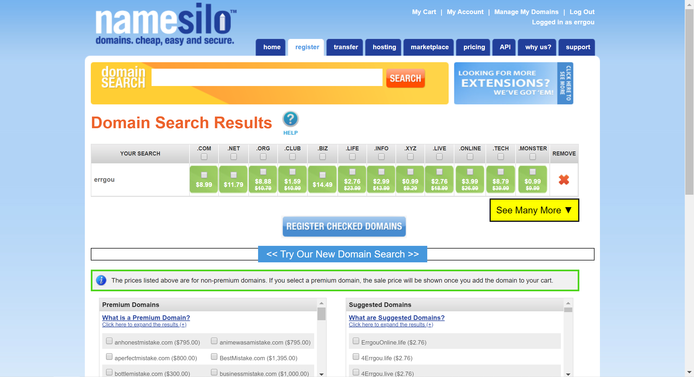
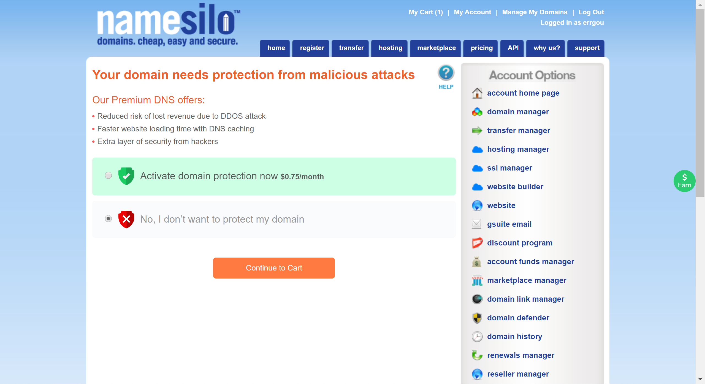
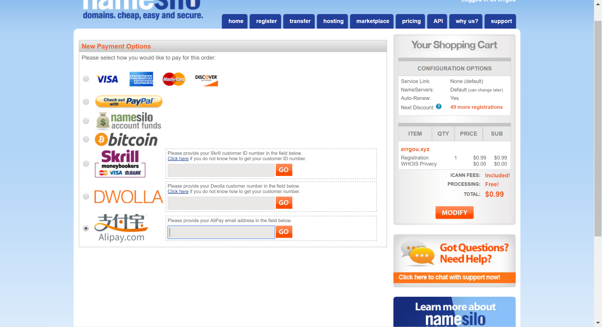
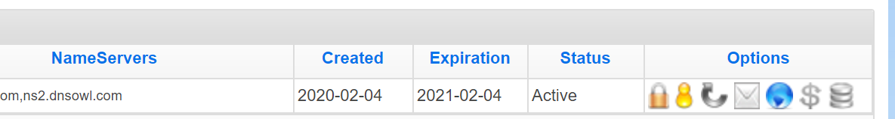
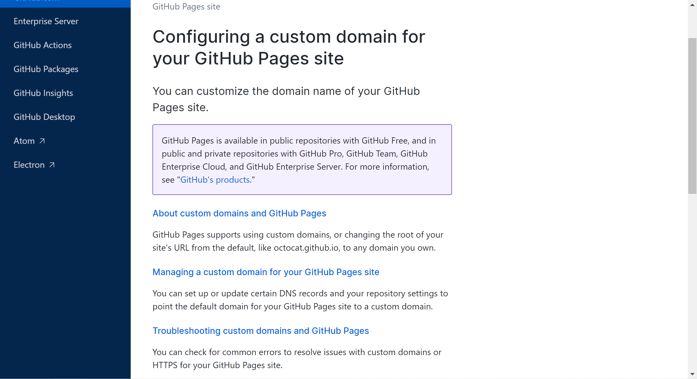
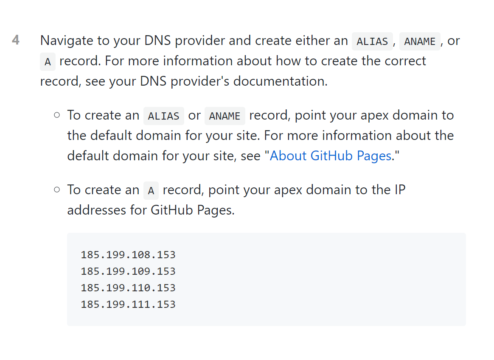

Hugo博客的搭建
通过Hugo 和 Git，搭建一个属于自己的博客
首先需要先下载Hugo的安装包：
- 可以直接在 Google 搜索 Hugo Releases
点击第一个链接https://github.com/gohugoio/hugo/releases
然后选择自己电脑对应的版本“hugo_0.64.1_Windows-64bit.zip”
依旧在D:\Software建立文件夹：hugo，将文件“hugo.exe”放置其中，并按照如下步骤配置环境变量
对我的电脑>右键选择属性>高级系统设置>环境变量>点击下方的Path>点击新建>将hugo的路径粘贴至此即可
接着在通过cmder输入命令行
hugo --version
若返回hugo的版本信息，说明安装正确，即开始下一步
之后可以按照hugo官网给出的指示一步步完成配置信息
点击“Quick Start”

第一步：安装并配置环境变量（这一步已经执行）

第二步：建立一个属于博客的文件夹

hugo new site quickstart
当中“quickstart”是文件夹名称，可以命名为: git名称.github.io-creator，易于理解
第三步：下载主题

cd 刚才的目录
git init
git submodule add https://github.com/budparr/gohugo-theme-ananke.git themes/ananke
echo 'theme = "ananke"' >> config.toml
这一步目的是：
- 建立一个.git本地仓库
- 下载一个名为"ananke"的主题
- 然后配置它
第四步：建立一个页面

hugo new posts/博客主题.md
之后默认内容如下 ：
---
title: "博客主题"
date: 2019-03-26T08:47:11+01:00
draft: true
---
之后可以在—之下编写博客内容
写完之后记得将上方的"draft: true"更改为：” draft: false”
第五步 ：启动hugo服务器

在命令行内输入以下代码：
hugo server -D
之后会返回如下值：
| EN
+------------------+----+
Pages | 10
Paginator pages | 0
Non-page files | 0
Static files | 3
Processed images | 0
Aliases | 1
Sitemaps | 1
Cleaned | 0
Total in 11 ms
Watching for changes in /Users/bep/quickstart/{content,data,layouts,static,themes}
Watching for config changes in /Users/bep/quickstart/config.toml
Environment: "development"
Serving pages from memory
Running in Fast Render Mode. For full rebuilds on change: hugo server --disableFastRender
Web Server is available at http://localhost:1313/ (bind address 127.0.0.1)
Press Ctrl+C to stop
暂且不要关闭，点击底下的链接： http://localhost:1313/
即可在网页当中打开刚才编辑的博客
第六步：自定义网站配置
 打开初始文件夹当中的: config.toml
打开初始文件夹当中的: config.toml
baseURL = "https://liqiyi.xyz/"
languageCode = "en-us"
title = "My New Hugo Site"
theme = "ananke"
第二行配置语言，可以更改为：
languageCode = "zh-hans"
最后一行为设置主题信息
theme = "ananke"
可以在官网的主题区,选择心仪的主题

点击进去，找到下面这样的下载链接：
git clone https://github.com/kimcc/hugo-theme-noteworthy.git themes/noteworthy
在命令行运行上面代码之后，即可在themes文件夹之下下载新的主题代码文件夹
之后再在网站配置： config.toml
theme = "ananke"
将"ananke"更换为新下载的主题名称，再重新运行即可。
第七步：保存静态页面

在命令行运行
hugo -D
即可将网页保存至 public 文件夹内
至此博客的配置便告一段落，接下来说如何将博客代码上上传至github
如何将这部分代码备份到git
此时我们需要将 public 网页文件夹和 博客的总文件夹 分别上传到 git 上面
第一步：将public和这个文件夹分离
需要在总的文件夹内新建一个名为 .gitignore 的文件 在当中写入
/public/
意为在上传总文件夹的时候，忽略 public 文件夹
然后进入 public 文件夹，运行
git init
在 public 文件夹内建立.git仓库
第二步：在github建立一个新的仓库，名称可以为：
git名字.github.io
然后选择ssh，粘贴下面代码至命令行
git remote add origin git@xxxxxxx
git push -u origin master
完成public部分代码的上传
第三步：在github上面，为这个总的文件夹再建一个仓库，以作备份。
新建一个 git 仓库，然后将 ssh 代码复制，将命令行切换回这个主文件夹，然后运行
git remote add origin git@xxxxxxx
git push -u origin master
这样不论主体和public内容都上传到了 github
在git上面预览博客
进入保存public文件的仓库 点击右上角 setting
找到 GitHub Pages ，如果下方没有下图绿色提示

可如此设置

之后点击绿色内部的链接，即可浏览博客内容
之后就是配置个人域名了
首先得有一个域名
下面是国外的一个注册域名的网站，价格较为优惠

可以在中间的搜索框，输入自己心仪的字符串，来查找对应的域名存在与否和价格情况
点击Login，然后注册一个账号登录。
选好域名然后添加购物车。

这个选择 no 会便宜一些

再之后进入付款的界面：

选择支付宝，旁边输入支付宝安全邮箱，再之后完成支付即可。
然后点击右上角的
Manage My Domains
 管理域名，点击蓝色的球

点击单个 “A” 在
IPV4 ADDRESS
里面输入从git上面得到的地址信息
还是在存放public的仓库，点击 setting

在框内输入刚刚购买的域名，点击 Save 然后点击旁边的
Learn more.

然后点击第二个

翻到这里，然后将下面的这四个地址，分别添加到之前在 namesilo 上面的域名配置里面
然后将自己配制的四个“A”保留，其他的原始配置全部删除。
至此域名配置完成
最后检验一下
打开命令行，输入：
nslookup 你的域名
如果返回的值里面有你刚才配置的四个地址，那么说明配置成功
之后就可以通过这个域名访问博客内容